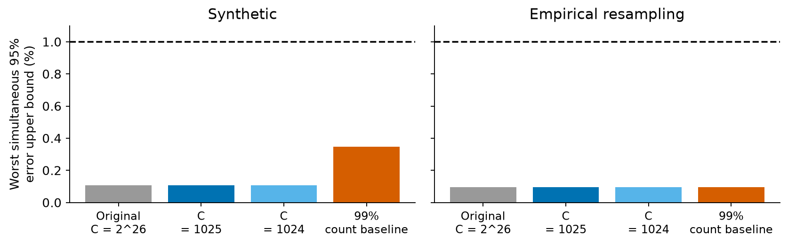
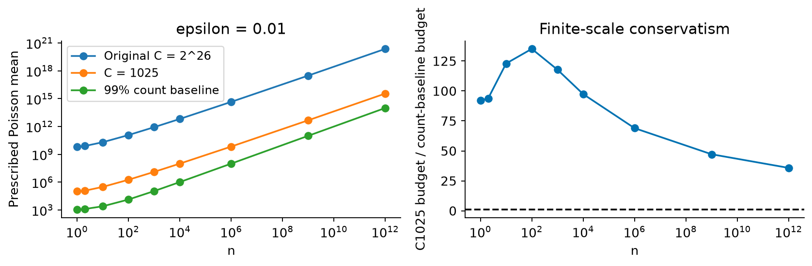
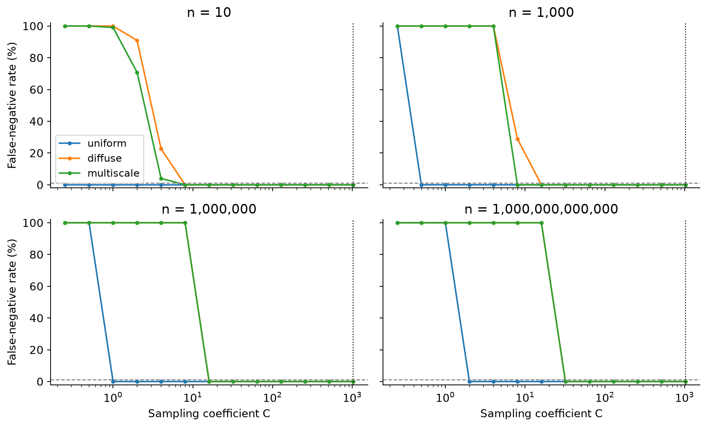
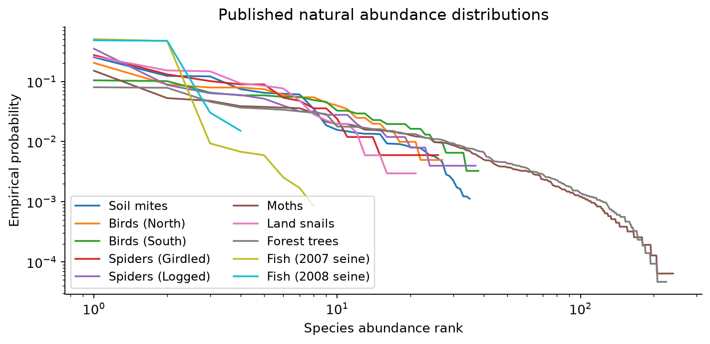
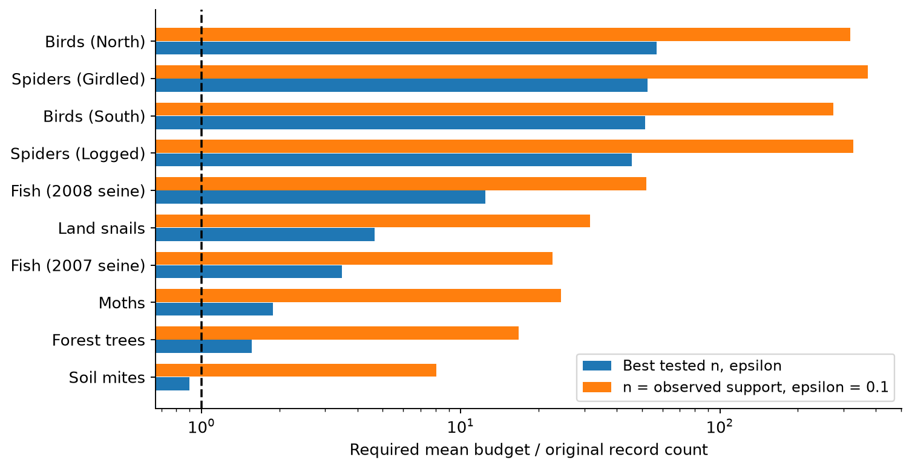
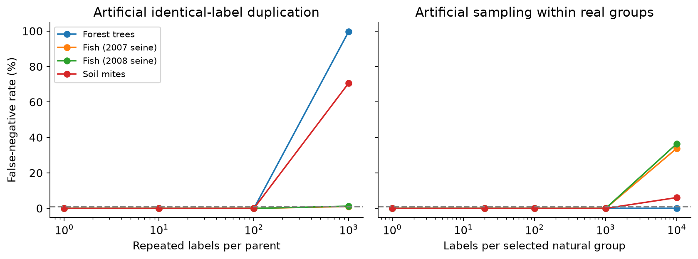
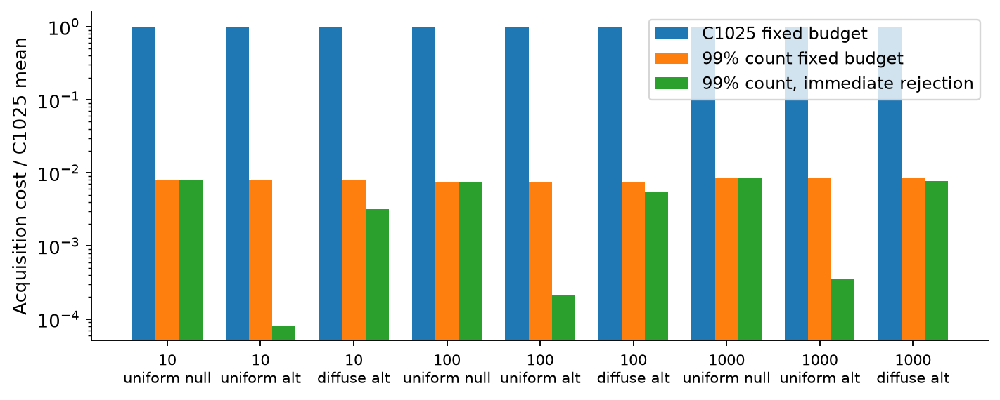
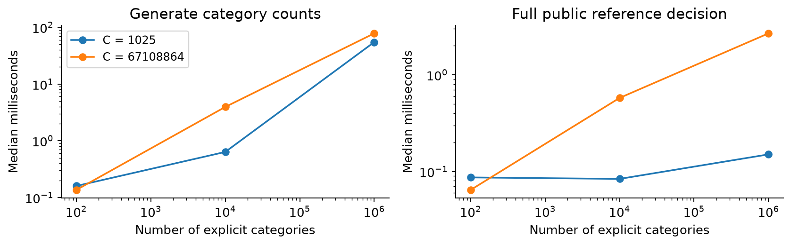

实验论文 PDF（含完整证明附录） · 仅实验章节 PDF · LaTeX 主文件 · 机器可读结果
Yes 表示支持数不超过 n；No 表示 n 个最高概率类别外的质量至少为 ε。Gap 不定义二元错误率。ε 是分离距离，不是错误概率。表中的上界是按整套测试网格校正后的单侧 95% 置信上界；零观察错误不等于真实错误率为零。
| 数据 | 方法 | 错误/承诺试验 | 最差错误率上界 |
|---|---|---|---|
| synthetic | C = 1024 | 0/5,550,000 | 0.107% |
| synthetic | C = 1025 | 0/5,550,000 | 0.107% |
| synthetic | Original C = 2^26 | 0/5,550,000 | 0.107% |
| synthetic | 99% count baseline | 203/5,550,000 | 0.347% |
| natural | C = 1024 | 0/1,760,000 | 0.095% |
| natural | C = 1025 | 0/1,760,000 | 0.095% |
| natural | Original C = 2^26 | 0/1,760,000 | 0.095% |
| natural | 99% count baseline | 0/1,760,000 | 0.095% |
新常数比原来的理论预算小约 6.55 万倍，但仍比本实验的 99% 计数基线多用 35.8–135.2 倍样本。因此，实验支持常数改进和实现正确性，不能宣称现实采样效率超过这个基线。C=1024 在现实网格上同样通过，最小整数结论不能靠这组实验区分。
十个真实总体来自七类生物，均为公开的有限丰度记录。236 个配置中只有 2 个原始记录数达到 C₀=1025 的平均预算，且都来自土壤螨数据。其他配置的结果是从经验分布生成新 iid 样本的算法基准，不能说已经验证了未知自然总体。已有数据中看见超过 n 个物种可以直接拒绝；看见不超过 n 个物种且样本不足则不能认证接受。
保持边际物种概率但人为引入相关性后，最坏错误率分别达到 99.825%（重复观测）和 42.400%（真实分组内成块采样）。这说明 iid 假设实质重要，并非仅在报告里加一句免责声明。

Worst cellwise error upper confidence bounds, Bonferroni-adjusted within each suite over all promised method cells. Zero observed errors are not zero risk.

Prescribed acquisition budgets, not simulator run times. The original coefficient decreases by about 65,472x, but a 99% Chernoff count baseline remains cheaper over all tested sizes.

Coefficient sensitivity for three alternatives at epsilon=0.01. Each point has 4,000 trials; the CSV includes simultaneous confidence bounds. Dashed horizontal line: 1% target. Vertical dotted line: C=1025.

Rank-abundance distributions for ten published empirical populations spanning seven biological groups. These are observed finite populations, not complete ecosystem inventories.

Budget feasibility: ratios above one mean that the original file has fewer observations than the prescribed mean. Even ratios below one do not establish iid field sampling or guarantee a Poisson draw fits in the file.

Stress tests preserve the marginal category distribution but violate independence. Group selection is abundance-weighted. Error increases measure artificial perturbations, not an estimate of actual field correlation.

Actual label-stream simulation at epsilon=0.01 with 300 trials per cell. The count baseline stops immediately upon observing n+1 species; a prescribed Poisson cap controls acceptance. C1025 bars are prescribed means, not an additional simulated giant stream.

Ten timed repetitions after one warm-up in each isolated process. Independent Poisson category-count generation and certified decision computation are separated. These timings exclude physical data acquisition.
完整公开接口执行 1,428 次；巨大参数、多项式系数和完整输出的独立代数检查通过 43,801 项。原始逐次 D 值、四个种子块、所有失败结果和 Gap 单元均保留。自然数据标签与有效支持整数另用原始整数计数复核。数值核验不能替代对所有分布的数学证明。
原始结果一致性审计 · 冻结实验设计及日志修正说明 · 数据来源与许可 · 真实数据预算逐项表 · 复现说明
当前材料是可审阅、可复现的实验论文稿；未指定具体会议模板，也不能由实验规模或排版推断达到某会议的录用标准。